Limestone Way to Cannock
Monday 18th May Furness Vale to Blackwell
Hill paths from home through the peak district and into the Derbyshire Dales
20 miles approx
Having been weathered and worn over the past month, I
had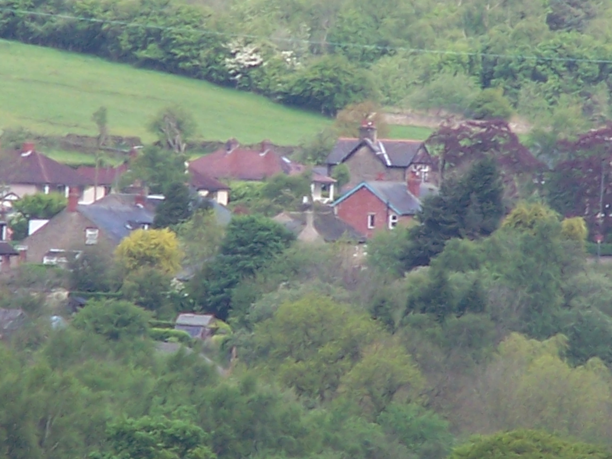 opted to take a proper rest. Now my shin was much better, my kit was in
order and I'd spent some time with Lorraine. The longer rest did however make it
much harder to set off in the morning, 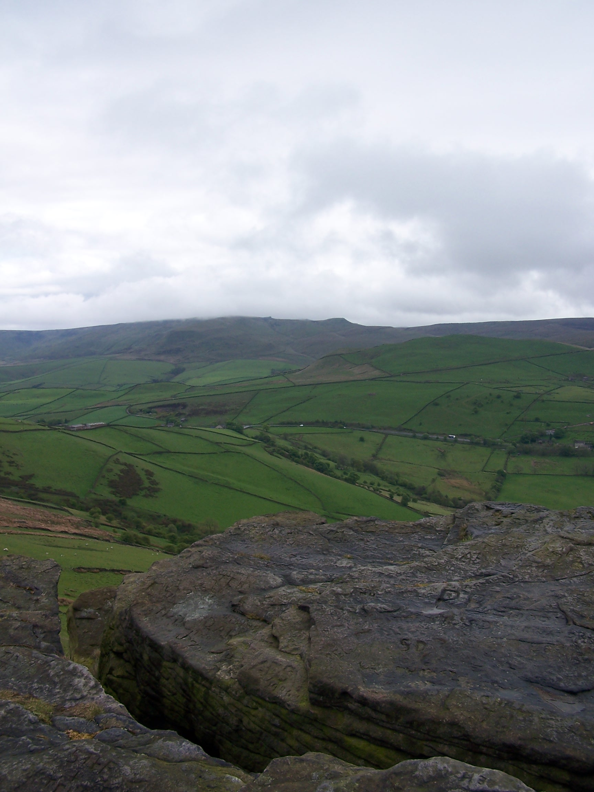especially
with rain running down the kitchen window as I
looked out at Big Stone hill. This was the first hill on the days
route. Retracing my steps back into the Pennines. Lorraine helped me to
make the decision to go, saying that if I left it
any
longer there was a danger I wouldn't ever set off. Anyway, all the rain
I'd suffered on the Pennine Way so far should have hardened me to it by
now.
I walked with Lorraine to the bus stop. She was heading to work. It was
very hard to turn the
corner down to the canal. I waved the last wave for another month at
least.
The rain went off as I looked back over Furness Vale from the lane
leading me up towards Big Stone. Today was all familiar
terratory and I
would end the day just south of Buxton. The rain was on and off as
I
headed down from Big Stone to the bench and then on over the
Hayfield road before climbing up to South
Head. I had originaly planned to walk into Castleton and join the
Limestone Way
from there, but instead I adjusted the route to cut a corner and headed
up Perry Dale towards Peak Forest to join it. Looking back over
South Head from Peak Forest I could see some very heavy and dark clouds
coming in. It had started raining again by the time I reached the
Limestone Way heading out to Wheston. I used the Pennine Bridalway
for a
short time before joining back on to the Limestone Way to the head of
Monks Dale. Here I met
a guy heading south. He was following the Limestone way to its end at
Castleton and was nearly done. I bet that felt great, but he looked
like he was on autopilot. At Millers Dale I had no choice but to walk
along the 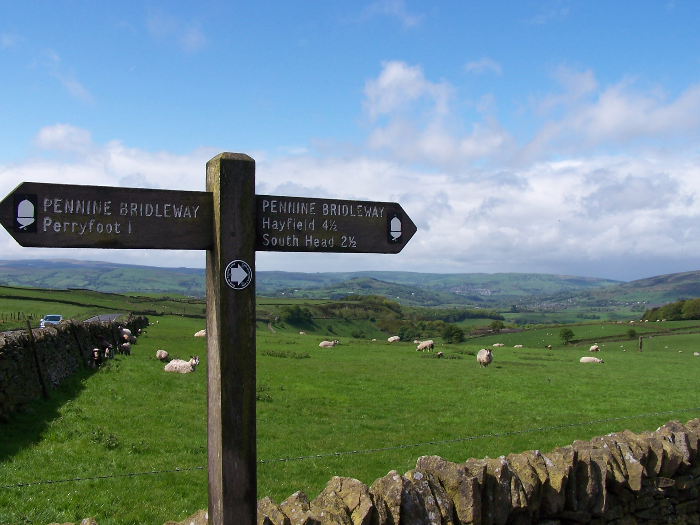road as there is no pavement. As I walked carefully looking up at the old
railway viaduct a cyclist rode up to and stopped beside me. He was
just on a day ride and was heading home to Buxton, he asked about my
destination for today. He then walked with me a
short distance and we parted as he headed on to Buxton along the road and
I took the
track up to Priestcliff Ditch. It rained very very hard here and I
tried to take shelter under some hawthorn trees. It eased a little and I made the short and quick walk down th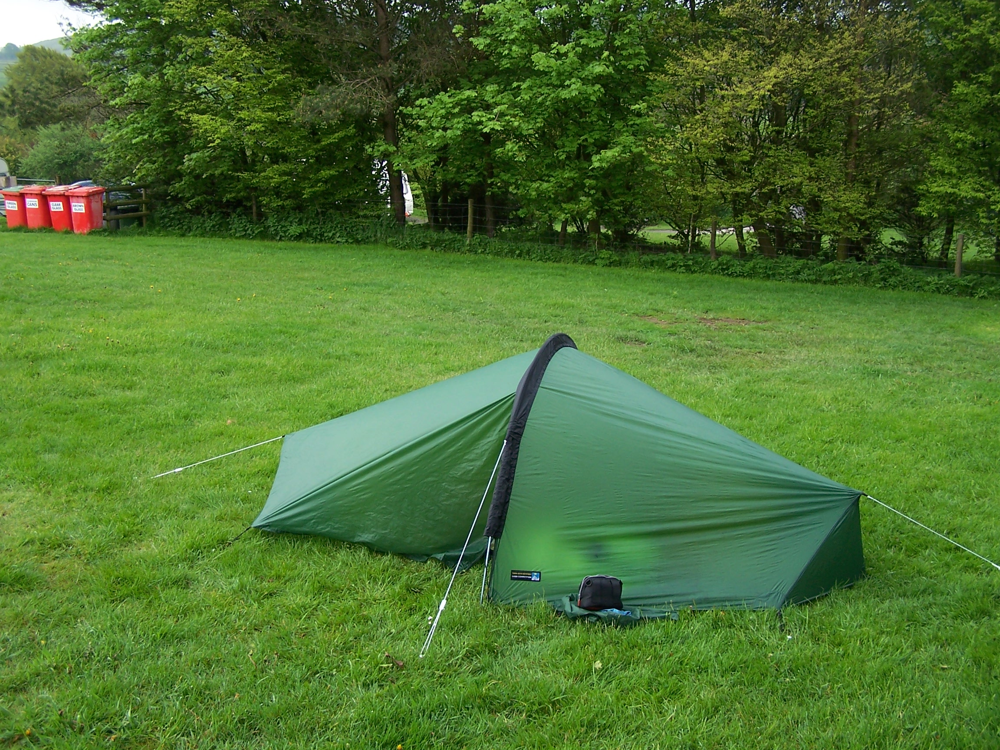e
road to bring me to Blackwell. There isn't much there. The campsite was fairly quiet with only me in
the tent field. It was the cheapest campsite so far at just £4. The lady in the shop
(farm) told me that she had taken the horses in earlier as it had rained so
hard. I said tell me about it. I bought some griddles and set the tent up. The
token operated showers were ok. I bought a couple of tokens and had a good 10 minute dowse. I lay in tent listening to
the rain as I called Lorraine. She was not that far away at all. I could see the hill
that sits between Buxton and Furness from here. She could be here in
half an hour in the car. I zonked out at 10ish. This homesick feeling would fade as I put in a couple more days distance.
Tuesday 19th May Blackwell to Swinscoe
Hill paths and railway tracks in the Derbyshire Dales
24 miles approx
I
woke
before the alarm with birds singing in the hawthorne hedges beside the
tent. I snoozed until 6:40am then went for
a shower. The tent was still a bit wet with no wind to dry it off. But
I packed it away and headed on and up along the Pennine Bridalway
to the main 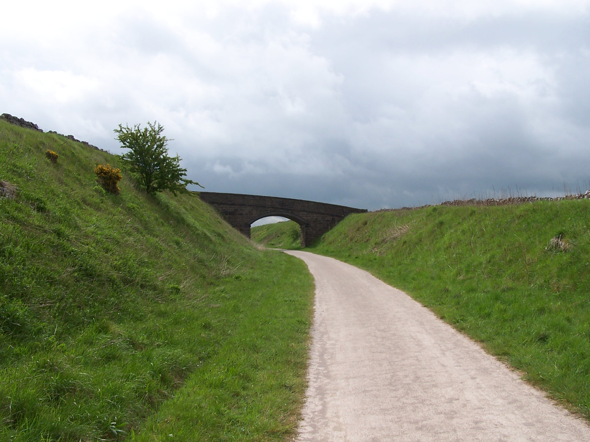Ashbourne
road. I passed a small burial cairn but didn't make the detour to it. I
will have to make the journey and revisit it at a later date. I
now joined an old railway line that had been made into the High
Peak Trail as it headed out towards Tissington. 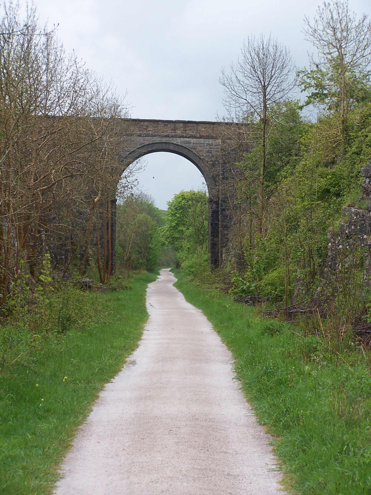This
was flat, well made, and made for easy
and quick walking. So I could get a pace on. However it should be
called snail trail as it was covered in snails. This slowed me down
having to dodge all about so as not to tread on any. The sign at the
start of the trail told that the old railway line used to run through
to Whaley Bridge at Buxworth Basin to join with the canal. This was all
gone now
with a huge quarry having taken a large chunk of it out altogether. I
walked on and fast,
the cloud was building up and it was ready to rain. I passed Pastures
End, an
old station that has now gone and has been replaced with a cafe and
cycle
hire place. This was closed however. There were a few people
about now, walking and on horseback. I pressed on and it started
to rain. Just a shower at first, then
gradually more heavy rain. I took shelter under bridges and the odd
tree. The sycamores were giving the best shelter. I noticed that the
snails
were all sheltering on the trees too. There must be hundreds of them
stuck along the branches and trunks.
Around Biggin the rain became serious. I was getting wet even through
my
waterproofs. This track made for easy walking but it was very open and
exposed too. The rain was sheeting in by now. Strangely a large strung
out group of
kids came riding by. This went on for some time, watching over my
sholder
for them as they seemed to be all over the place. I eventually 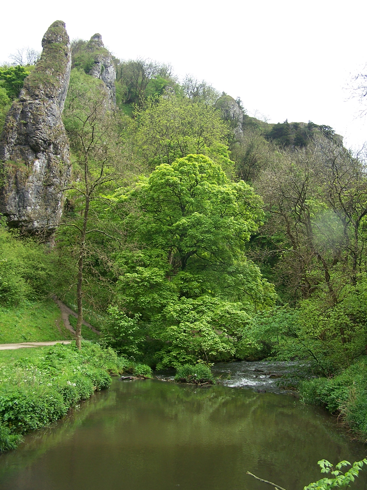came
off the trail at a small carpark at Milldale. I followed a small road
down, through a torrent of water, to the little village. As I arrived
the
rain went off. I was just thinking how I was really hoping to see
Dovedale in the sun and fat chance of that. The village is lovely but
for me today it was spoilt by
several white vans and builders working on the public toilets. I
crossed the small pack horse bridge an headed off into Dovedale. The
sun actually started to try to break through. I walked along the well
made track and
looked out for the points of interest. Illam rock, the Natural Arch and
others. Its a really nice walk, one worth doing without the pack on.
There
were a lot of people about even on this miserable day, so I guess it
gets
really busy when the weather is good.
At the far end, near the stepping stones (which I crossed just to say
I've done it) I took to a grassy path that crossed over to the village of Thorpe. I was hoping for a
shop, here but there was none. 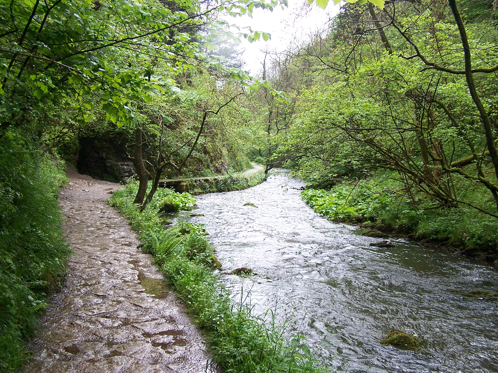I
called Ma from a payphone though at just 40p for 20 mins. I rejoined
the Limestone Way just past the old church outside the
village, crossing a strangely long Coldwell Bridge taking me across the
border into Staffordshire.
After a farm, the path dropped into a dip in the fields. This was now a
total mud bath. I
mean mud that was up to my ankles and there was nothing to do but
to stride
through it. I spent the next mile cleaning my boots off in the long
grass.
At Woodhouses I found an overgrown style into a field that promised to
take me up to the main A52 road through to Swinscoe.
This path hadn't been walk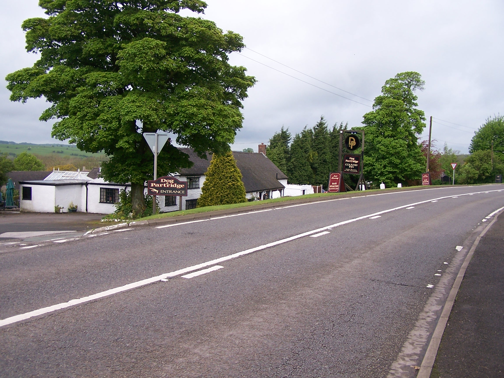ed
for some time with very long grass. I did eventually make it to the
road, having to dodge electric fences and climb over hard to open
gates. A few hundred
yards along a noisy main road and I was at the Dog and Partridge
Hotel. This is an old coaching house hiding a horrible seventies
motel style
group of outbuildings at the back. I was in one of them. The
clouds were
really dark now but I was safe in my room when it chucked it down. The
room did have a nice bath, which I used before heading into the
Inn for dinner. What sounded good on the
menu was only average grub but with a serious price tag. I watched
a bit
of TV before going to sleep. I noticed that the room was full of dog
hairs and now so was I. Nice.
Wednesday 20th May Swinscoe to Uttoxeter
Hill paths following the Limestone and Staffordshire Way
12 miles approx
After
an OK breakfast I ordered a packed lunch, and paid up before leaving.
Todays walk was to be through field paths but started along the main
A-Road outside. Half a mile down the road I only just 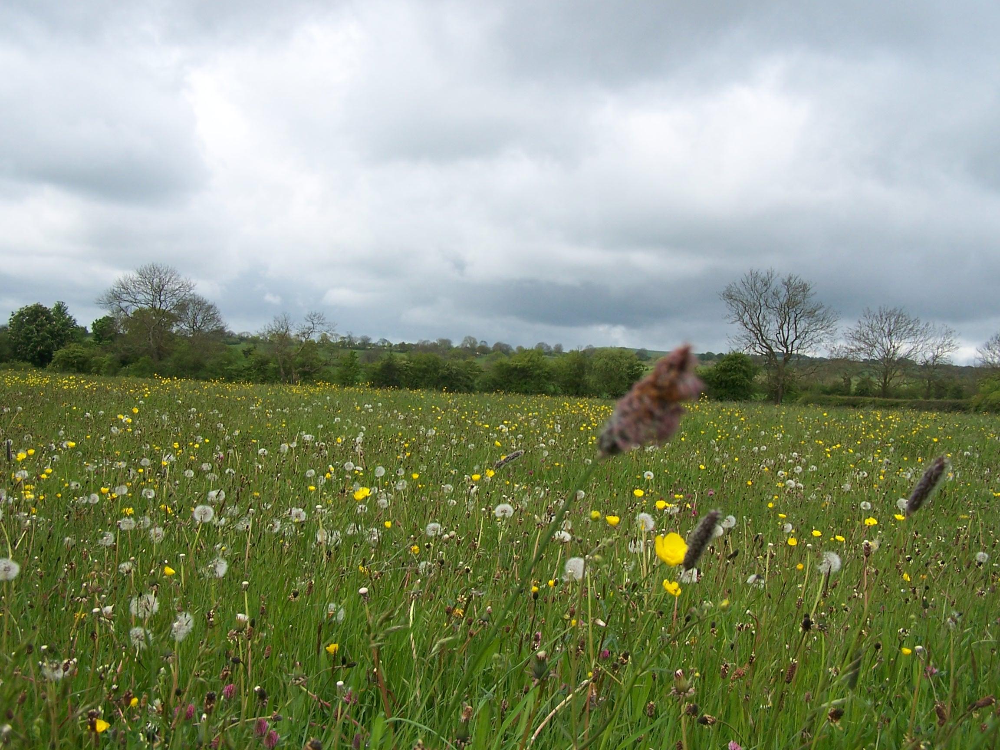noticed
the stile to join the Limestone Way. It was totally overgrown. I
guess that this section isn't walked much at all. The path wasn't obvious at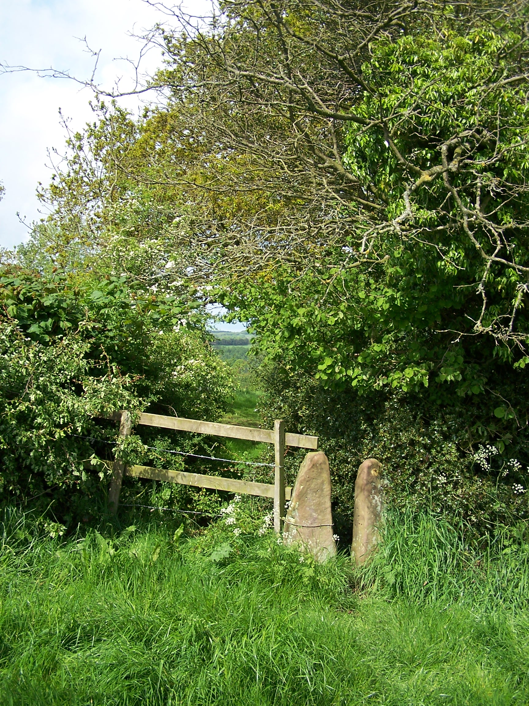
all either. To begin with I was hunting for each stile or gate. I made
several mistakes trying to used the map to see which side of the hedge
the path was on. I had to backtrack to the last field a couple of
times. After a while though
I got better at it. I was looking for slight signs in the grass or
dents in
an overgrown hedgerow. Some of the stiles were the very old stone ones.
Some of
the walking was wet and muddy but in the main it wasn't too bad really.
These
are fields for grazing animals, with lots of sheep and cows. The sun
came out and the day felt quite nice. I dropped off the path to a minor
road
to have a look at Dusley Cross. It was in the garden of a house of the
same name and had been dismantled and laid out on the grass. Why? I
followed the road along a stream
into Upper Ellastone and stayed on the road to rejoin the path at Lower
Ellastone. The path now follows the river and was very muddy due to a
lot of cows and a big ugly bull. Luckily it wasn't interested in me as
I passed a few feet in front of it. The path wasn't
very clear here either and again I found myself working from the map as
I entered
each field. I came back to the B5030 road which was very busy for such
a
small road. I crossed to another stile on the other side and into a
field, staying on the
Limestone Way. As I progressed through the field a large herd of cows
suddenly bolted ahead of me. At first I thought it was because of me
but then I heard a
deep menacing bark coming up behind me. About 30 yards away was a large
Rotweiller running my way. Hmmm. I decided to continue to walk while I
fumbled
to try and find my dog stop alarm. Like that would halt it in its
stride. Not. I had a quick check over my shoulder and the dog
was still coming
but wasn't getting much closer. I shewed away some cows and got
over the Stile into 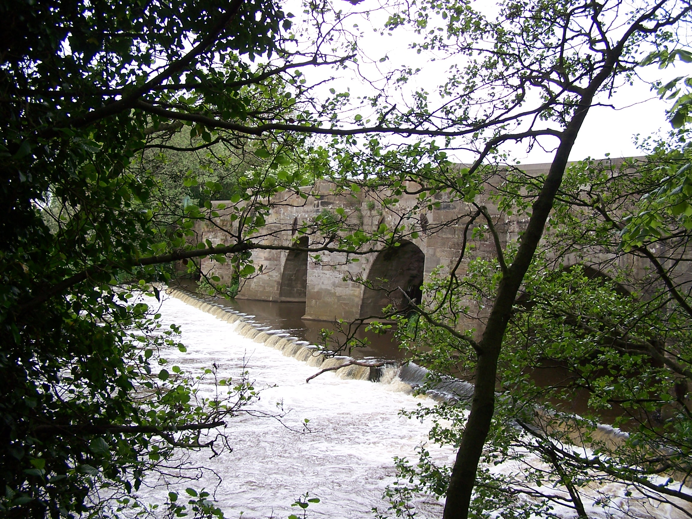the
next field. Phew. The dog stopped aout 20 metres away but continued to
boom at me. I guessed that it could have cleared the stile or fence and
had me for dinner if it wanted. It was just protecting its property. At
this point the heavens opened. I put on the waterproofs
and forged on through some very long grass. One more field, this one
having the path ploughed out and was very muddy, brought me to Rocester
and
the end of the Limestone Way. From here you can see the the big JCB
plant. This town is the site of an old roman
camp. You wouldn't know it today though. Its a big cluster of housing
estates with
a couple of not happy old cottages swamped up in the middle of them. I
did
find a shop though and bought a few bits. I now joined the
Staffordshire
Way just over a bridge from an old Courtaulds Spinning Mill which was
being converted to apartments. This path was much more obvious than the
end of the Limestone Way, with
proper signs and visible paths. It took me past a ruined farm house
that looked ready to
come down 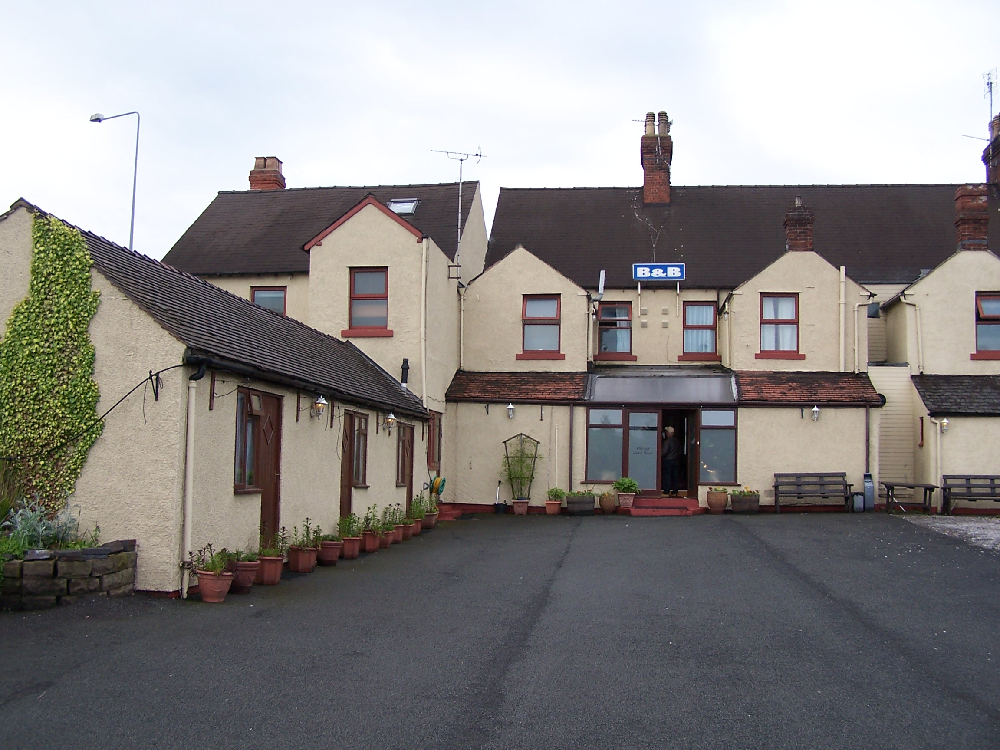and
then another farm house that was having a lot of work done on it. There
were lots of builders and vehicles all over the place. I could
hear a lot of
shooting ahead and was thinking that I was likley to get shot by a buch
of hunters or something. I had however joined
a signed bridalway to Dovebridge. The shooting continued and I noticed
that there were large groups as it was a clay pigeon shooting club.
There was at least a hundred gun toting sobs in country gentlemen
dress. They looked at me as if I shouldn't be there. But this is the
Staffordshire Way so there. As I left the site, I took an alternative
route as
the path I was on was being showered with shot falling from one of
the ranges. I
eventually made it to Dovevridge, which is an old bridge that is now
unused and superceded by a grotty concrete one. I had to walk under the
new busy road using a low and graffitied underpass. On the other side I
could clearly see
Uttoxeter race couse beyond a large open field. I found Uttoxeter was
busy with
traffic as I headed round to the racecourse to find the campsite. It
was a bit
out of the way and when I arrived the campsite attendant told me that
it would be £17.50 WHAT!. He told me that this was the price and that I
would be better looking for a B&B. I got the clear feeling that
they didn't welcome tents. There was a bit of caravan snobbery here.
Stuff the site. It isn't nice anyway. I walked back into town and found
a Guest House. The Old
Royd Guest House just near Tesco and KFC. This was better anyway. The
room was in an anex building at the back and was really nice. I headed
to
Tesco for tomorrows grub and to KFC for dinner. Some parts of the town
are nice but the road network that has been driven through it has taken
a lot away. The lady in the guest house showed me a photo of how it
looked not too long ago. Its changed a lot. It started raining quite
hard when I was in my room. I was
glad that fate had driven me to not camp.
Thursday 21st May Uttoxeter to Cannock Chase
Field paths following the Staffordshire Way and Cannock Chase
18 miles approx
After
a real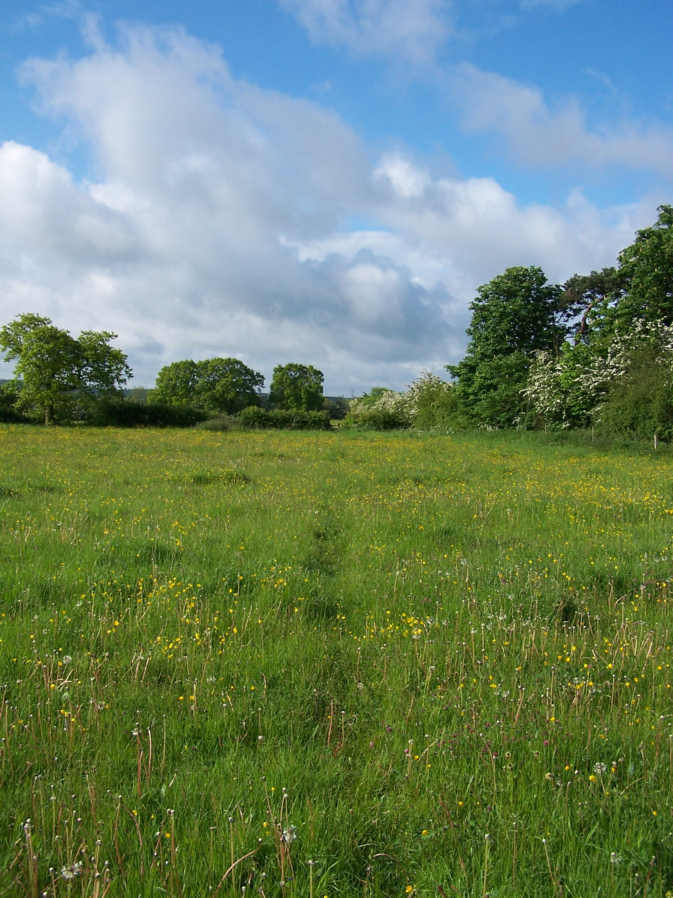ly nice full breakfast I was walking back along the road towards the
racecourse. I was on the road to Abbots Bromley. I rode on this route a
couple of years ago. I found t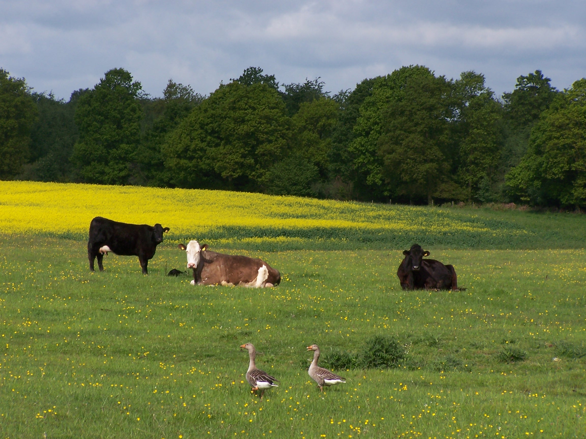he
Staffordshire way again as it cut
into a housing estate that wasn't on the map. I could see this estate
has been growing over
the years and was gradually creeping nearer to an old farm house. A
pitty. Closing the farmouse gate behind me, I was now back in open
countryside and heading off following an old bridal path through
farmland. One path was very
overgrown with long grass and weeds which were full of water from
last
nights rain. By the time I reached the end my pants were soaked.
The
paths on this section were a bit overgrown and so where possible,
I opted for the little roads to bypass them. After a really nice and
well kept farmhouse, Marlpit House
Farm, and a very wet and squelchy driveway, I found myself in some very
large and open fields. I was then following a
track past the strangly named Squitch House, hidden from view behid
trees and no trespass signs. A few wet and muddy field paths directed
me to small roads leading into Abbots
Bromley. It was nice and sunny as I arrived. There are no shops in the
village, just
a couple of pubs. Even the Farmhouse Tea shop that I had seen in
2007 had been converted into a Kids Club. So there were no option to
resupply here then.
I followed a little road out towards the reservoir. At the dam the path
took a detour through a field with cows and a huge bull. The cows 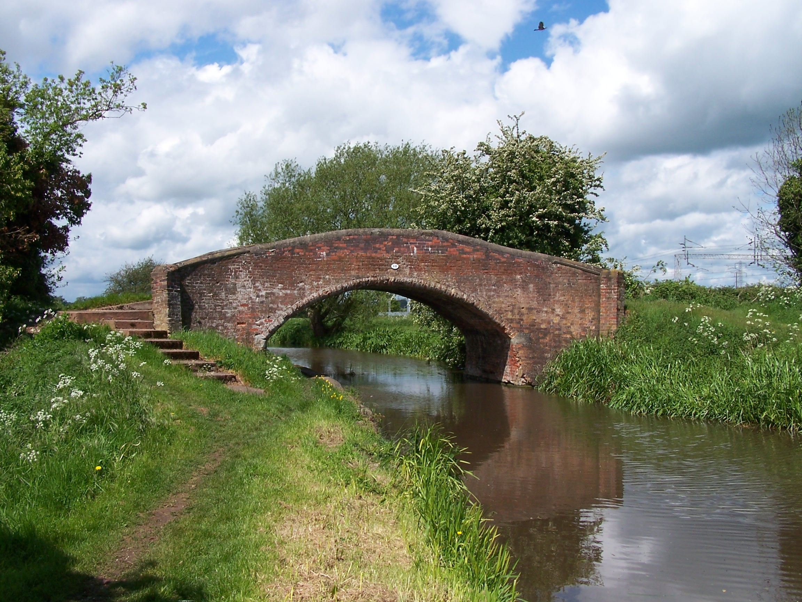did
a
runner as I crossed the style but the bull just stood there. I guess I
didn't frighten him. I joined the road at the next little village of
Broughley, with lots of nice houses but again no shops. From here the
way joins the Trent and Mersey canal but I left it to cut into Rugley
on my way to Cannock Chase on the other side. I managed to use
side roads to skirt around Rugley, cutting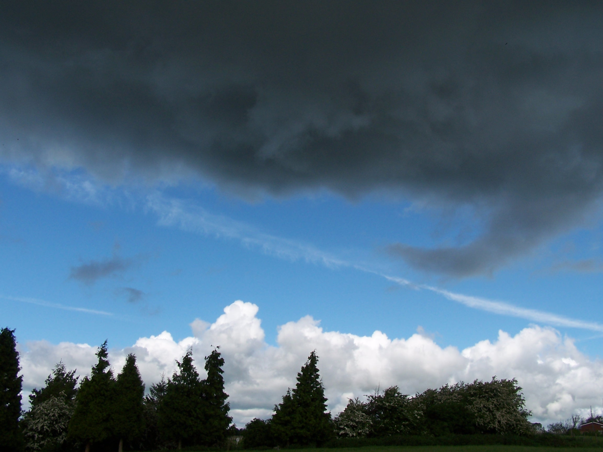 through a little wooded hill that had evaded the housing planners.
Cannock Chase is a maze of
paths through some old and new woodland. Its a nice place for mountain
biking and walking. I walked through looking at some sculptures that had been set out for interest
along the path and after a bit of road walking I crossed a main A road and joined the Marquis's
Drive track that cut through the Chase heading south.
I was now on the Heart of
England Way. This is the path that would take me over one hundred miles all the
way to Chipping Campden in the Cotswolds. I followed the wooded drive to
Wanden campsite. The site was really nice and the people running it
were too. 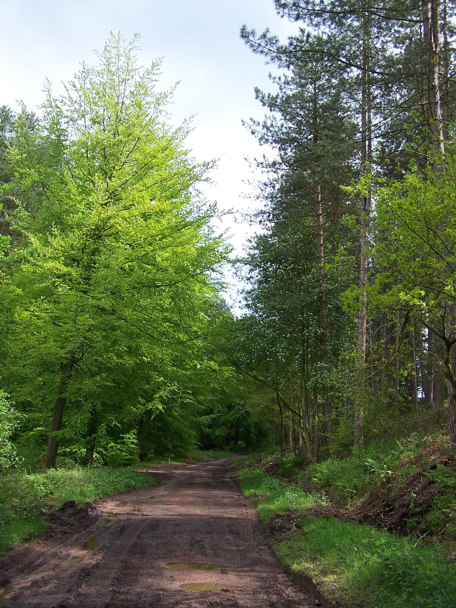They were interested in my walk and the little shop
had everything i needed for supplies. Being a camping and caravan club
site the facilities were top notch with a clean and usable laundry and good showers. I was able to
get all my clothes washed and dried. I had to walk up hill a little to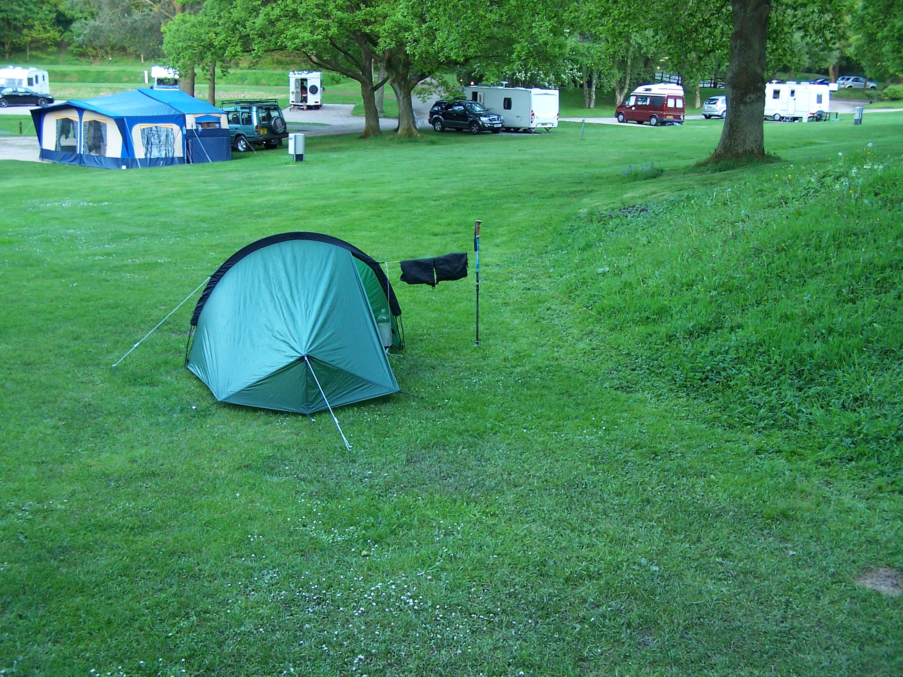
get any phone signal to call home. I did this with the warm setting sun
streaking through the trees. A nice end to the day and an end to
another chapter of the walk. I was far enough away from home to
be thinking ahead rather than feeling at all homesick. There was still
a long way to go.
.